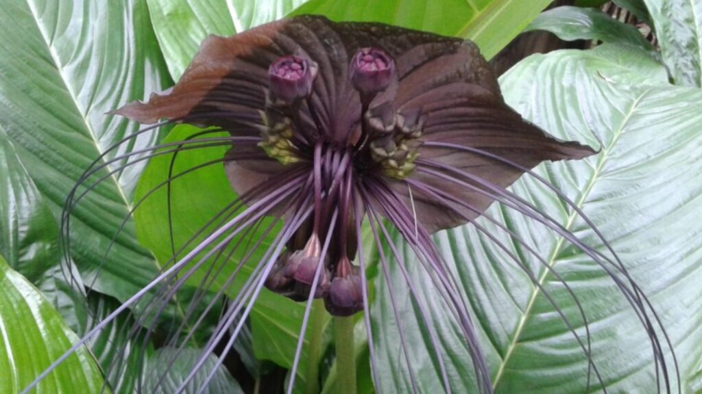
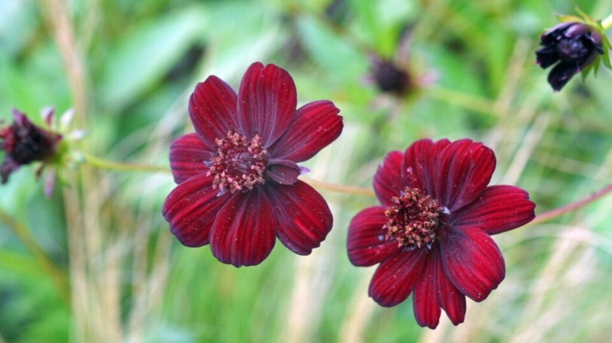
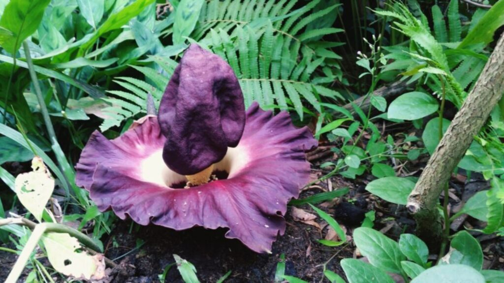
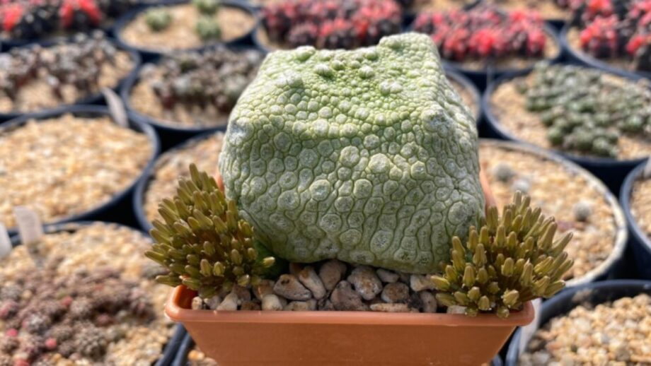
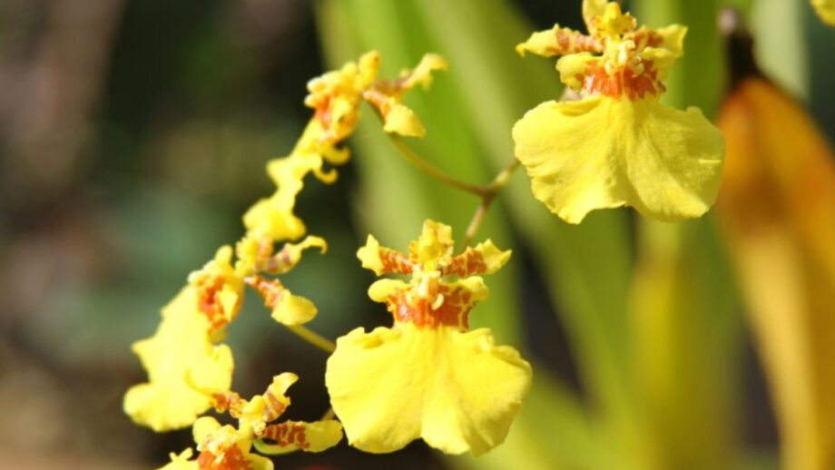

Explore the world of Rare Flowers – a unique collection of exotic, handpicked blooms. Perfect for special occasions, we deliver rare beauty right to your doorstep.Let me know if you want to focus more on gifting, nature, or online delivery!
Collections of few

Black Bat Flower
The Black Bat Flower is one of the most unique and exotic-looking perennials. This black flower looks similar to a bat with its wing-shaped bracts, and the seed pods resemble a bat’s face. The black bat flower has become scarce in the wild because of its specific environmental conditions. It requires lots of humidity and regular watering, so growing this as an indoor plant is challenging.
Its cousin, the White Bat flower, is also a rare flower that can be challenging to find, as well.

Chocolate Cosmos
This stunning cosmos flower has a chocolatey fragrance, hence its name. Though they were believed to be extinct for decades, Chocolate Cosmos were spotted in Mexico in the early 21st century.
Still, these highly sought-after flowers are hard to come by. Chocolate Cosmos are stunning perennial flowers that bear velvety, maroon petals with dark brown centers.

Corpse Flower
The Corpse Flower is a rare, exotic plant with flowers blooming just once every nine years at minimum, and sometimes, there are decades between blooms. Not only is the Corpse flower one of the rarest in the world, but it is also known to be one of the largest flowers in the world.
It contains no roots, leaves, or stems and has just one petal. When in bloom, it emits a foul odor that’s compared to rotten meat to attract its prey, insects.

Cube-Shaped Pseudolithos
The aptly-named Cube-Shaped Pseudolithos is a succulent that grows into a nearly perfect cube. This succulent grows from a single stem with flowers that bloom in red, yellow, or green.
It takes quite a bit of time for it to grow, and it can be hard to come by. If you plan to purchase a Cube-Shaped Pseudolithos, be prepared to spend more than $100.

Dancing Girls Orchid
Because of its adorably unique appearance, the Dancing Girls Orchid is considered to be one of the most sought-after, rare flower species worldwide. Each plant only grows to be about a foot tall, and its flowers are less than an inch.
If you are able to get your hands on this flower, its colors will be either light pink or white with petals that look like a tiny dancing girl.